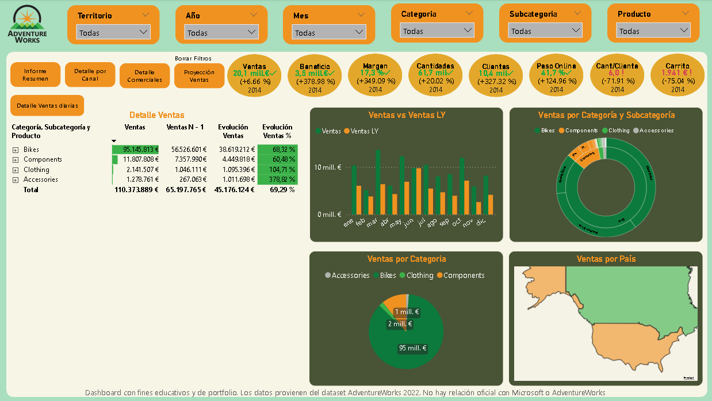
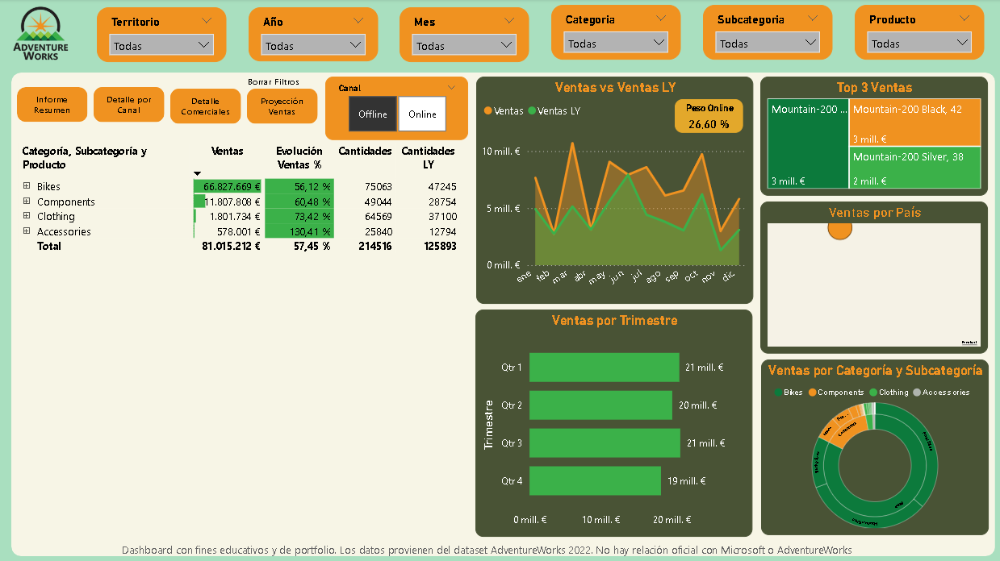
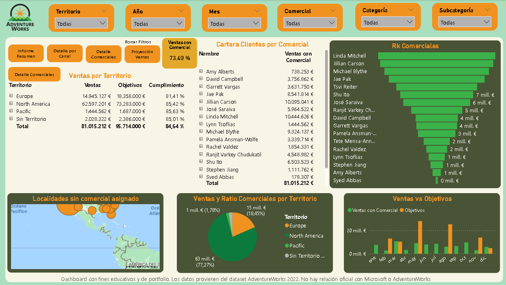
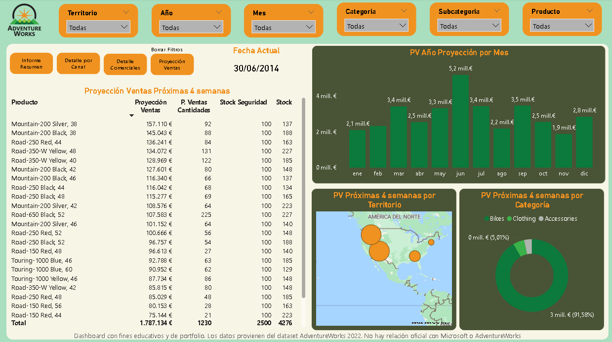
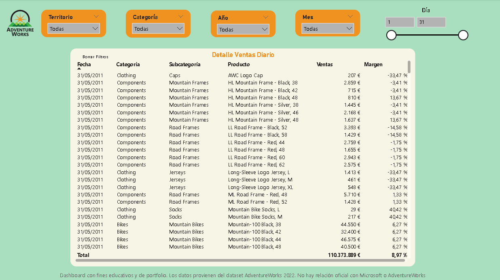

Contexto
Dataset de ventas de retail, incluyendo información de productos, comerciales, canales y registros históricos.
El objetivo es generar insights accionables para decisiones comerciales estratégicas y realizar proyecciones de ventas.
Objetivos del análisis
- Analizar la evolución de ventas y márgenes por producto y categoría.
- Evaluar la performance por canal de venta.
- Analizar la contribución de cada comercial y su cartera.
- Realizar proyecciones de ventas basadas en histórico.
Estructura del Dashboard
Ventas generales
- KPI principales: ventas totales, margen, productos top.
- Gráficos de evolución mensual y por categoría.
Ventas por canal
- Comparativa entre canales: online, tiendas físicas, distribuidores.
- Identificación de los más rentables.
Ventas por comercial
- Ranking de comerciales según ventas y margen.
- Identificación de comerciales estratégicos y su cartera.
Proyección de ventas
- Forecast basado en histórico.
- Gráficos de tendencias y predicciones para el próximo trimestre.
Técnicas y herramientas
- Power BI: dashboards interactivos, segmentaciones y KPIs.
- SQL: extracción de datos, JOINs y agregaciones.
- DAX: medidas para cálculos de margen, crecimiento y proyecciones.
- Power Query: limpieza y transformación de datos.
Dataset
Fuente: AdventureWorks 2022 (SQL Server sample database)
Más información y descarga
Principales insights
- El 20% de los productos genera el 60% de las ventas.
- El canal online crece a más del doble del ritmo que el offline.
- Cuatro comerciales concentran más del 50% de la cartera de clientes.
- Según las proyecciones, la empresa cuenta con stock suficiente para 4 semanas de ventas.
Ejemplo de visualizaciones




